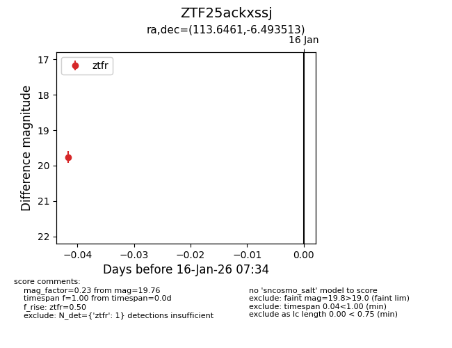
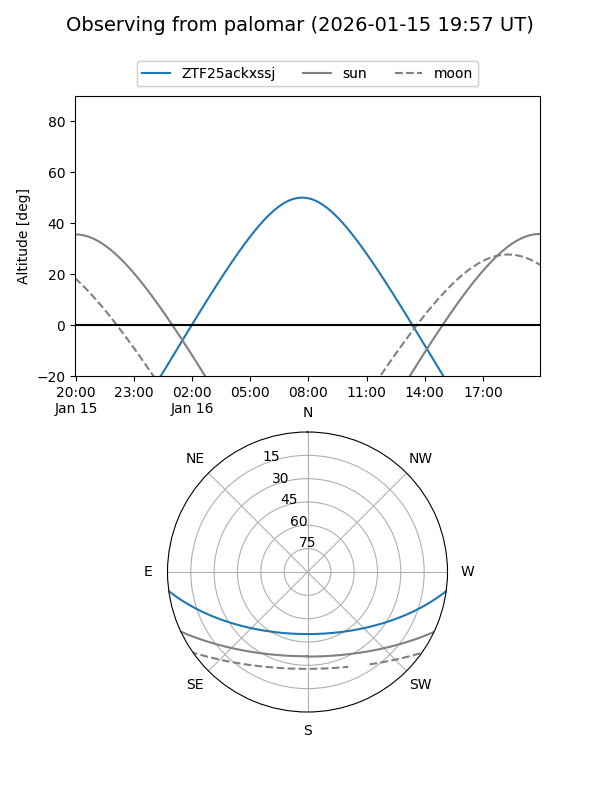
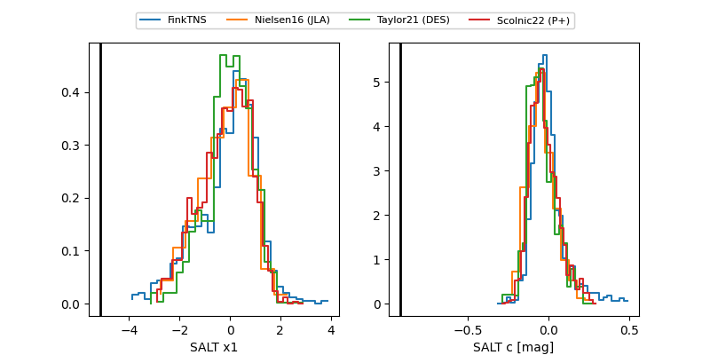

ZTF25ackxssj
Target ZTF25ackxssj at 2026-01-16 07:37
Aliases and brokers:
FINK: link
Lasair: link
ALeRCE: link
alt names
ZTF25ackxssj (ztf,fink_ztf)
Coordinates:
equatorial (ra, dec) = 113.6461,-6.49351
equatorial (HMS+DMS) = 07:34:35.07,-06:29:36.65
galactic (l, b) = (223.6896,+6.54176)
Flags:
Photometry:
last ztfr=19.76
1 ztfr detections
Lightcurve

Visibility


Additional plots
